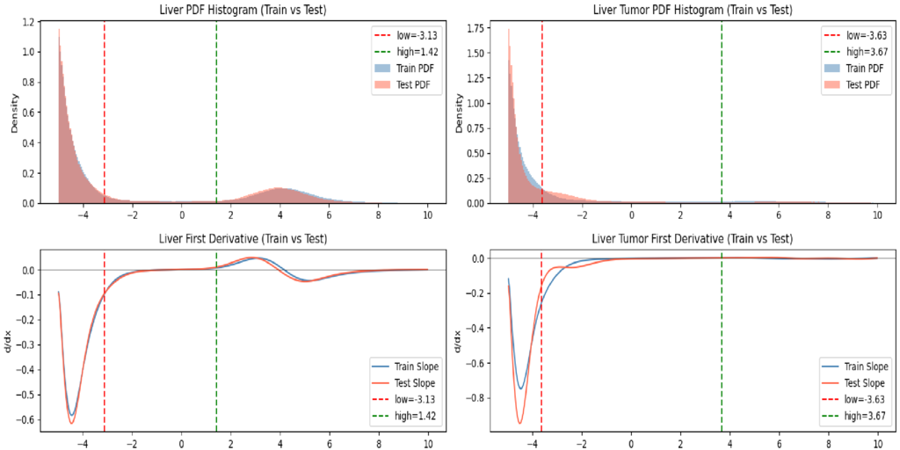
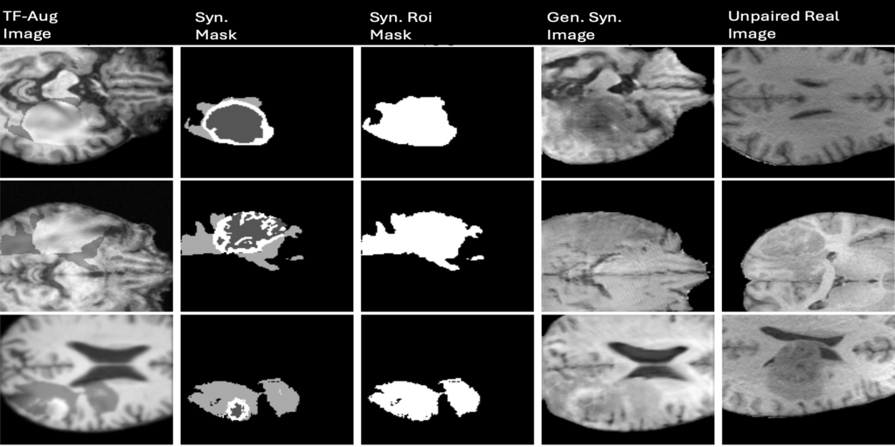
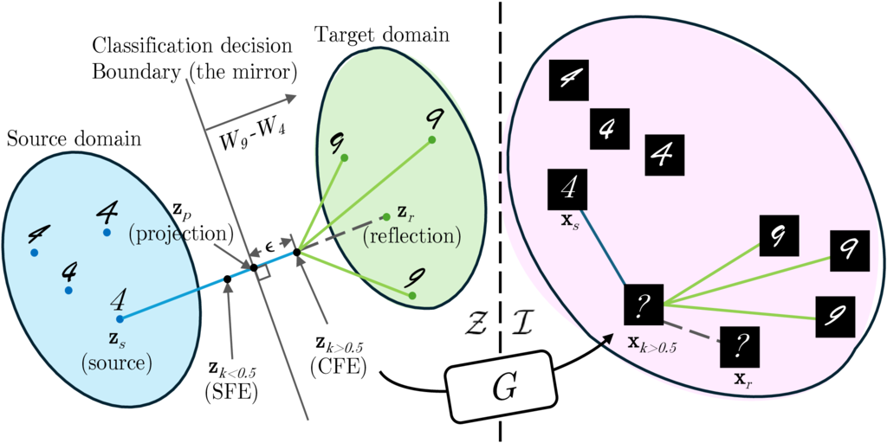

I am a PhD candidate at the Australian Institute for Machine Learning (AIML), Adelaide University, supervised by Prof. Johan Verjans and Prof. Zhibin Liao. I received my Master’s degree in Data Science from the University of Adelaide in 2024, and my Bachelor’s degree in Public Administration from Wuhan University of Science and Technology in 2021.
My research interests lie in medical AI, with a recent focus on 3D medical image segmentation. I am particularly interested in developing accurate and robust AI methods for segmenting pathological cases, with the broader goal of bridging medical AI research and real-world clinical practice to develop methods that can provide meaningful support in clinical settings.

@inproceedings{dong2026aca,
title={ACA: Post-hoc Adaptive Logit Alignment for 3D Medical Image Segmentation},
author={Dong, Nanyu and Chen, Qi and Verjans, Johan and Liao, Zhibin},
booktitle={International Conference on Medical Image Computing and Computer Assisted Intervention (MICCAI)},
year={2026}
}
@inproceedings{dong2025from,
title={From Healthy Scans to Annotated Tumors: A Tumor Fabrication Framework for 3D Brain MRI Synthesis},
author={Dong, Nanyu and Chowdhury, Townim F. and Phan, Hieu and Jenkinson, Mark and Verjans, Johan and Liao, Zhibin},
booktitle={2025 International Conference on Digital Image Computing: Techniques and Applications (DICTA)},
pages={1--8},
year={2025},
organization={IEEE}
}
@inproceedings{chowdhury2025looking,
title={Looking in the Mirror: A Faithful Counterfactual Explanation Method for Interpreting Deep Image Classification Models},
author={Chowdhury, Townim Faisal and Phan, Vu Minh Hieu and Liao, Kewen and Dong, Nanyu and To, Minh-Son and van den Hengel, Anton and Verjans, Johan W. and Liao, Zhibin},
booktitle={Proceedings of the IEEE/CVF International Conference on Computer Vision (ICCV)},
pages={2239--2249},
year={2025}
}